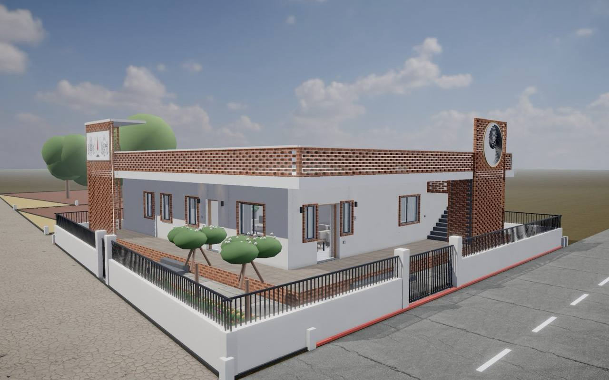
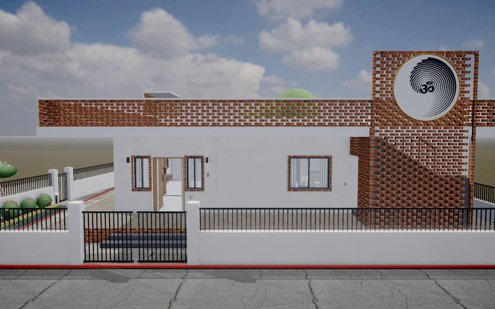
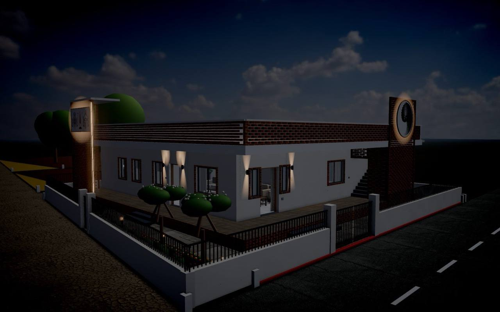

1 · Terracotta jaali veil
Lime-white walls veiled in terracotta brick jaali: a jaali parapet with white coping on both road sides, jaali stair and side towers, terracotta window surrounds and plinth.
Why it works: the jaali filters the morning sun on the 21 ft road side, screens the stair from the street and lets the breeze through. Simple bricks laid with gaps give a strong look on a modest budget, as in SPASM's Ishtika House (Ahmedabad) and 4site's House Belaku (Bengaluru)3.
- Wire-cut terracotta bricks, jaali bond: parapet and towers (≈ 850 sq ft)
- Lime-white exterior paint, ₹17–26/sq ft1
- White coping and slab fascia
Budget guide: brick jaali is mason's work. Plain wire-cut brick jaali costs well below the ₹1,800–4,500/sq ft quoted for designer jaali2, so get local quotes. Seal the bricks every few years.